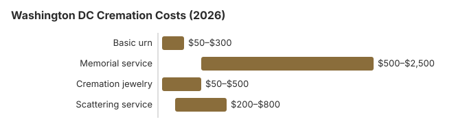

Cremation Costs in Washington, DC (2026)
Choosing cremation in Washington DC can mean spending $1,945 (or $6,103) on essentially the same disposition, with the difference accounted for almost entirely by optional service features. Understanding that distinction is how families save the most money. There is no published cremation rate for the District alone; for the country as a whole, NFDA’s 2025 Cremation & Burial Report projected a 63.4% rate for 2025.
Types of Cremation in Washington DC
Direct Cremation
- Least expensive choice in the District
- No service before cremating
- Sent directly to the crematory
- Family receives the ashes
- A memorial can follow later, wherever the family likes
Cremation with Service
- Funeral service, then cremation
- Visitation is an option
- Service at a church, funeral home or other venue
- A basic urn may be included
- A full gathering for family and friends
Cremation Cost Breakdown for Washington DC
| Item | Washington DC | Virginia Avg. (our estimate) |
|---|---|---|
| Direct cremation | $1,945 | $1,900 |
| Cremation with service | $6,103 | $6,400 |
| Basic urn | $50 – $300 | $50 – $300 |
| Memorial service | $500 – $2,500 | $500 – $2,000 |
| Cremation jewelry | $50 – $500 | $50 – $500 |
| Scattering service | $200 – $800 | $200 – $600 |
Sources: the $1,945 direct cremation price is the median in the DC Attorney General funeral home price survey (August 2017), the newest District-specific survey we found; the $6,103 cremation-with-service figure is the South Atlantic median in the NFDA 2023 General Price List Study, as tabulated by Choice Mutual. The 2024–25 prices come from the Heaven Bound Cremation Services of D.C. price list (effective Sept. 1, 2024) and the Stewart Funeral Home price list (effective Oct. 20, 2025); the $75 approval fee is in the Medical Examiner fee schedule (28 DCMR § 5006). Urn, memorial, jewelry, and scattering ranges and the Virginia column are our estimates.

Compare: Washington DC vs. Virginia
Cremation costs vary across District of Columbia's metro areas. Here is how Washington DC compares:
| City | Direct Cremation | Cremation w/ Service |
|---|---|---|
| Washington DC | $1,945 | $6,103 |
| Virginia | $1,900 | $6,400 |
How to Save on Cremation in Washington DC
- Ask several District providers for written General Price Lists and compare them item by item.
- Check cremation societies: Ask whether a nonprofit cremation or memorial society serves your part of the Washington area; such groups often charge less than full-service funeral homes for direct cremation.
Regional Context: Cremation in Washington DC and the South
Direct cremation prices inside the District vary a lot. Heaven Bound Cremation Services of D.C. starts at $970 on its September 2024 price list, while Stewart Funeral Home on Benning Road lists $2,317.88 to $2,417.88 on its October 2025 list. The last District-wide look, the Attorney General's 2017 survey, found a $700 to $6,800 range around a $1,945 median, so the provider you call first matters more than any citywide average. Every cremation of a death in the District also needs approval from the Office of the Chief Medical Examiner, which charges $75. Heaven Bound's packages include that fee, and Stewart's range runs $100 higher when a death in Virginia or the District needs cremation approval. Asking two or three homes for the direct cremation line on their price list is the quickest way to see where each one sits.
Cremation Resources
- Funeral Consumers AllianceNonprofit advocacy: compare cremation providers
- Cremation Jewelry GuideMemorial keepsakes and remembrance options
- Cremation vs. Burial CostsSide-by-side cost comparison
- Pet Cremation CostsOptions and prices for pet cremation and memorials
- Final Expense InsuranceCoverage options to help pay for cremation costs
Compare Funeral Costs
- Average Funeral Cost in 2026National cost breakdown with real prices
- Cremation vs. Burial Cost ComparisonSide-by-side price comparison to help you decide
- Funeral Cost BreakdownEvery line item explained: know what you're paying for
- Cheapest Funeral OptionsLower-cost alternatives, with typical price ranges
- Direct Cremation: Most Affordable OptionNFDA 2023 median $2,645 with a family-supplied container (latest available)
- How to Compare Funeral PricesStep-by-step guide to getting the best price
Frequently Asked Questions
How much does cremation cost in Washington DC?
Cremation costs in Washington DC range from $1,945 for direct cremation to $6,103 for a full funeral service followed by cremation. Price lists we checked put direct cremation at $970 at Heaven Bound Cremation Services of D.C. (September 2024) and $2,317.88 to $2,417.88 at Stewart Funeral Home (October 2025). That is about the same as our $1,900 estimate for direct cremation in Virginia. Additional expenses may include urns ($50-$3,000), memorial services ($500-$2,000), and scattering fees ($200-$600).
What types of cremation are available in Washington DC?
Washington DC families can choose from: direct cremation ($1,945), the most affordable option with no viewing or ceremony; cremation with memorial service, a ceremony held after cremation; and traditional cremation ($6,103), a full funeral service before cremation.
Is cremation cheaper than burial in Washington DC?
Direct cremation in Washington DC at $1,945 costs an estimated $6,078 less than a traditional funeral with burial. Even cremation with a full service ($6,103) costs less than traditional burial when you factor in cemetery plot, vault, and headstone expenses.
Where can I compare cremation prices in Washington DC?
Under the FTC Funeral Rule, every cremation provider in Washington DC must provide a General Price List upon request. Call 2-3 providers in the Washington DC area to compare. You can also check Parting.com or the Funeral Consumers Alliance for local price comparisons. Direct cremation providers often offer the lowest rates.
Can I scatter ashes in Washington DC?
Scattering laws in the Washington DC area follow District of Columbia regulations. Check local ordinances in Washington DC for specific rules. Alternatives include columbarium niches, burial of ashes, and memorial keepsakes.
More in District of Columbia
Disclaimer: These are planning estimates, not a quote or professional advice. Full disclaimer.
Getting the DC medical examiner's cremation approval
The District's medical examiner has to approve a cremation of anyone who dies in DC, wherever the cremation itself takes place. Funeral homes apply online. The Office of the Chief Medical Examiner says a request takes about 24 hours to process, payments are nonrefundable, and only one payment can go through per request (DC OCME; checked October 29, 2026).
The same approval is required for an anatomical donation or a burial at sea, since in each case the body will no longer be available for examination. Families can check on a request through the office's Identification Unit at (202) 698-9000.
Cremation rules and help in Washington, DC
To check that a cremation provider in DC is licensed, or to report a problem, contact the DC Department of Licensing and Consumer Protection (DLCP), Occupational and Professional Licensing at 202-671-4500.
Because DC is not on the Funeral Consumers Alliance list of nine states that restrict family-directed care, the family may deal with a DC crematory directly once the cremation permit has been issued.
Timing and permits: The District has no waiting period. A funeral director needs next-of-kin authorization, a filed death certificate, a Registrar's permit and medical examiner approval (D.C. Code § 7-231.17).
Since DC Burial Assistance ended on September 30, 2025, there is no District payment for a cremation; a family that was on DC benefits can call the Economic Security Administration at 202-727-5355 about what is left. (Source: DC DHS Burial Assistance notice.) The $255 Social Security death payment to a qualifying DC spouse or child would cover only part of the $1,945 direct cremation estimate above.
Cremated remains of an eligible DC veteran can be placed in a VA national cemetery columbarium or in-ground site at no charge for the space. See cem.va.gov.
Next steps for a cremation in DC
- Ask whether a DC cremation price includes the death certificates and the permit fee, which some providers bill separately.
- Ask which office signs DC cremation permits where the death occurred, and how long it takes.
- Plan a DC cremation budget without District aid, which ended in September 2025; the Economic Security Administration (202-727-5355) can review other benefits.
- Note the board's number, 202-671-4500, before you pay a cremation provider.